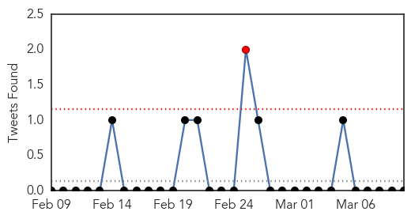

Dengue Fever
30-Day Web Trend
0 alerts, 0 warnings

30-Day Twitter Trend
0 alerts, 0 warnings

Article Locations

Article Confidences

Top Articles:
- 0.997
- Amid H1N1 scare, 3 dengue cases
- 0.952
- Fogging at City Hall as Basuki Comes Down With Dengue
- 0.944
- Dengue exposures unnoticed among Ghanaian children
- 0.940
- Governor Ahok comes down with dengue
- 0.934
- Governor Ahok Comes Down With Dengue
- 0.867
- Rainy weather spreads illness, sends more infants to hospitals
- 0.860
- PH spends less than P1B to fight neglected tropical diseases
- 0.803
- Big buzz about sterile males in the Florida Keys
- 0.614
- Rainy weather spreads illness, sends more infants to hospitals
Top Tweets:
-
No tweets found for Mar 10, 2015
MERS
30-Day Web Trend
15 alerts, 5 warnings

30-Day Twitter Trend
1 alerts, 0 warnings

Article Locations

Article Confidences

Top Articles:
- 0.998
- DH closely monitors additional MERS case in Germany
- 0.996
- MERS toll rises to 405
- 0.987
- German returning from UAE found to have Mers
- 0.987
- One Case of MERS-CoV in Germany is Reported to WHO
- 0.978
- News Scan for Mar 10, 2015
- 0.977
- German visitor to UAE contracts Mers
- 0.974
- Philhealth bares benefit for MERS-CoV
Top Tweets:
-
No tweets found for Mar 10, 2015